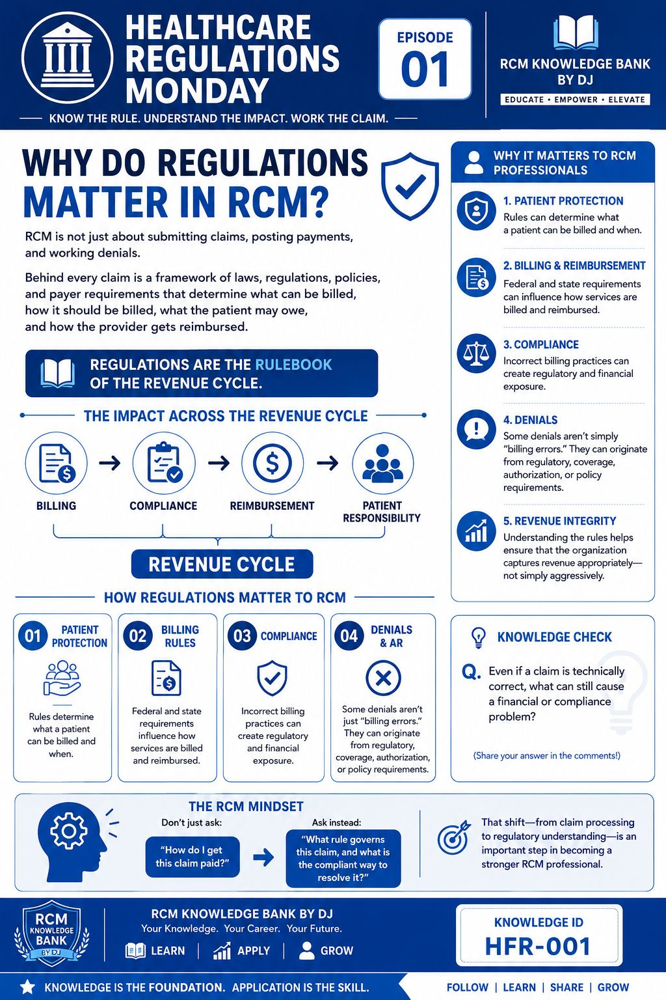

Individual learners
Build foundations. Practise decisions. Grow at your own pace.
I'm learning for myself →A visual, foundation-first way to understand US healthcare revenue cycle management—then reason through decisions and practise safely.
Built on trustworthy knowledge. Designed to grow with you. Core self-learning resources are intended to remain free.
One Knowledge Bank · Different journeys
One knowledge foundation. Three ways to use it.
Build foundations. Practise decisions. Grow at your own pace.
I'm learning for myself →Share foundations, reinforce knowledge, and learn together.
I'm exploring team learning →Strengthen denial prevention, AR reasoning, and workflows.
I'm exploring practice learning →The team and practice pathways describe the direction of the platform. They are not a claim that a live team dashboard, practice portal, or consulting engagement is currently available through this site.
The signature learning philosophy
Connect the clinical story, documentation, coverage, claim, payment, and operational decision.
Build the clinical context, terminology, rules, and maths.
Read the facts. Compare options. Explain your next step.
Practise with fictional cases and feedback that teaches.
Choose a visual learning sample. Browse with the arrows.

Connect the healthcare context to the work that follows. Visual summaries are a starting point; the learning journey builds the reasoning behind them.
A real sample experience · about 3 minutes
A fictional patient visit reaches the billing team. Choose the next step—and learn from the reasoning.
The situation: Jordan visits an in-network clinic. The encounter is complete, but the coverage information was last checked several weeks ago. The claim has not yet been submitted.
What is the best next step?
Learning point: eligibility verification can help confirm coverage information, but it does not guarantee payment. Real workflows must follow provider procedures and payer requirements.
Explore the learning rooms
Short, interactive previews across healthcare revenue cycle domains. These are starter lessons, not a claim that every curriculum is complete.
Walk around the model
Explore what is open today, being built, and planned for tomorrow.
Select any part of the model to learn what it means and where it stands today.
Decide, get feedback, and try again.
Try the mission ↗Open visual learning previews across core RCM and specialty domains.
RCM basics ↗Medical RCM ↗Dental RCM ↗Behavioral health ↗Mental health ↗DME ↗Vision care ↗Touch and feel a fictional account ledger and workflow.
Open sandbox ↗Explore how the Knowledge Bank can grow across systems and regions.
Explore world roadmap ↗Explore definitions, sample calculations and data-quality checks.
Explore metrics ↗Try a practical DMAIC lesson using an RCM scenario.
Learn DMAIC ↗Connected topics, sources, lessons, and practice.
A personal view of learning and growth.
Shared learning for teams and practices.
Status is a plain-language snapshot for this soft launch, not a delivery date or guarantee. The long-term vision may expand as we learn from pilot participants.
What stays at the centre
Regulatory and operational learning should be checked against authoritative sources where applicable, with dates and context made clear.
A wrong answer should open a door to understanding—not intimidate the learner. Explanations and retries are part of the learning design.
Public examples use fictional information. This site is not a payer connection and should not receive real patient bills or protected health information.
Self-learning knowledge resources are intended to remain free. Optional guided learning or facilitated services may have separate fees.
We are inviting early learners, team leads, and practice professionals to explore the sample and share what would help them most. Tell us your learning goal and opt in for occasional launch updates.